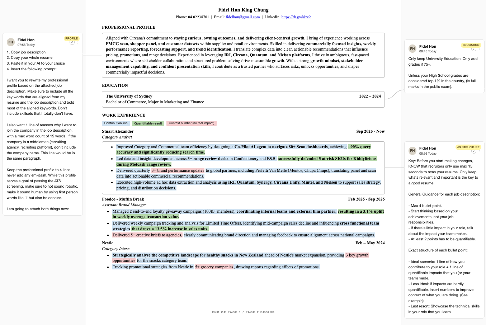
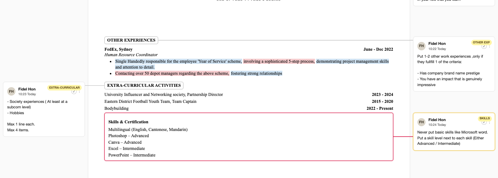
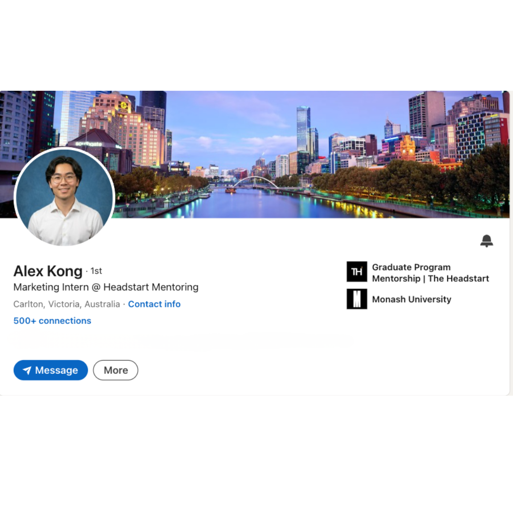
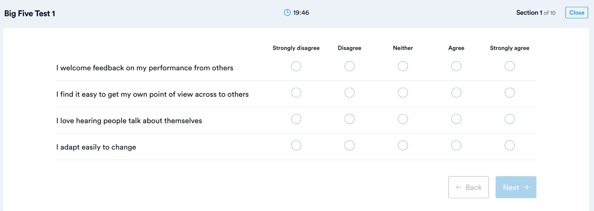

Mentor Resource Hub
Everything you need to guide a student from confused to hired. Session frameworks, application templates, networking scripts, and the full interview question bank.
Session Flow
A baseline 3-session structure to get a student from resume to active job search. Adapt to the student's pace.
Session 1: Understanding their circumstance
Use the left side of the "How to Stand Out" framework to assess where they are. Review their resume live and showcase the resources available.
(Optional: depending on how much they know about their industry or pathway, walk them through it.)
Ask them to prepare a story of their timeline since high school: any unique experiences, events that shaped them, funny or interesting stories worth telling.
To finish before next session
- Resume fine-tune
- Timeline and unique fact preparation
Session 2: Build a more solid basis
Mark up their resume, give further feedback so they can perfect it. Ask them to walk through their timeline.
Cover letter prep and LinkedIn check. If you have time, this can be done in the first session.
To finish before next session
- Finalise resume changes
- Update LinkedIn
- Prepare cover letter draft
Session 3: Networking and outreach
- LinkedIn and cover letter feedback
- Dive into who to connect with
- Split into proactive and reactive connection
Proactive connection: create a list of target companies, then connect.
Reactive connection: see a hiring post, then connect.
How to Start
A few prompting questions to understand if the student is committed to their current direction. The goal is to introduce different roles within the industry they want to join.
- Uni major analysis: what do you like and what don't you like about your major?
- Is there something beyond your major that you are open to?
- What are the roles in your chosen industry? Build a spreadsheet with a short intro for each.
- How does the market look based on the jobs listed?
- Do you have prior internship experience and want to continue down the same route?
These few questions are enough to understand whether they are settled on the route or still exploring.
Resume
Reference examples for resume structure and formatting.


The key of a LinkedIn profile is to show recruiters in your desired industry that you are a good candidate.
You have to:
- Make it clear which industry you are targeting (make up your mind)
- Show why you stand out vs other candidates
There are no fixed formulas, but here are recommendations to help fulfil the above two objectives.
Landing page

- Clear professional picture of yourself (not an angled selfie)
- Clear role of internship or society in the description under your name
- Cover photo: something related to the city you are in, or a custom poster that includes your name, uni, and a city backdrop
- At least 100 connections
About section
Structure the content like this:
- Intro about yourself (country, your subject)
- Interested industry you are getting into, and why
- Fun or interesting fact about yourself relevant to your desired industry
- Short description of your most proud achievement relevant to that industry
Each section separated by 1 blank line. Keep each section to no more than 2 lines.
Experience
Put direct and relevant experience into the Experience section. Society experience can go here if it is directly relevant to the role.
If you have no internship experience and only minimal society experience, you can include a part-time retail job.
If you have at least 2 relevant experiences, you can drop the part-time retail role.
Put your most impressive 1 to 2 points into the description (especially anything with quantifiable impact).
For society experience that is less relevant, put it under Voluntary.
Education
- List uni. If you have impressive high school grades that translate to ATAR, include them too.
- List all competitions and societies you are part of (being a member alone doesn't count).
- List uni grades only if they are Distinction or above.
Honors and Awards
List all relevant awards.
Testimonials
Ask for testimonials from previous managers, or teammates in case competitions, where relevant.
Nice-to-haves
- Creative portfolio as a link
- Posts related to the industry you want to get into
- Website version of a resume
Cover Letter
The truth about cover letters is that at least 60% of the time they won't be read by a recruiter. But on the chance they do, how can we impress them and stand out?
Give the AI:
- My resume
- 1 unique fact about me
- Job description
Then ask it to write a cover letter using the structure below.
Rules: no em dashes. Cannot be more than 200 words. Make paragraphs coherent, linking 1 to the next. "Insert 1 line" is high-level guidance, not a literal limit.
Where to Find Roles
Where to apply reactively.
Online platforms
- Seek
- Indeed
- Prosple
- Seekgrad
- University job portal
- Headstart website
Networking Playbook
How to build connections before any job is posted.
Step 1: Use AI to build your target company list
Paste this prompt into AI:
Step 2: Mass connect
- Mass connect to the 3 personas in "Who to Connect"
- Send a message to everyone who accepts the connection. Never use AI on this part.
Who to Connect (Proactively)
3 different types of people, listed in order of priority.
1. People directly in the team or adjacent teams you are going for
How to find them: look at the role being advertised, the listing usually has info on the team. Find them and connect.
2. Directors / CEOs of the firm with influence
Connect to all director-level employees and ask them for a chat.
3. Recruiters / Talent Acquisition
Directly responsible for the initial rounds of hiring. Often too busy, so reach out before a job post is out.
Outreach templates
Never copy and paste verbatim, always tweak the wording.
Coffee Chat
What's the purpose of the coffee chat?
- Build a connection so you can ask for favours, like referrals
- Understand the role and industry landscape better
- Gain advice on how to approach job searching
- Coffee
To truly build a connection
- Make them feel good about sharing advice with you
- Make them feel respected and accomplished because they sense you look up to them
- Showcase your passion for the field they are in
How to achieve that
Prepare 5 to 6 questions:
- 2 to 3 questions about their specific journey, so you understand how they got there and they get to talk about themselves
- 2 to 3 questions about the role they currently do and their company
- 1 to 2 questions on advice for job searching
The questions must be curated after you do research on the company and role. Don't ask simple questions about basic job tasks, they will tell you themselves.
Extra tips
- ALWAYS wear at least semi-formal
- Always thank them if they are buying you a coffee
- Bring a notebook to jot notes
- Prepare your resume to send if they are interested in helping you
- Feel free to ask them what they do outside of work
- Be yourself and just enjoy the coffee
What to do after the chat
- Send a follow-up message to thank them
- Don't ask for another coffee chat
- Thank them for their time and tell them 1 thing you found most useful. Keep it short and simple.
Interview Foundations
What Interviews Actually Test
Interviews are not about knowledge. They test these things, ordered by importance:
- Competence and Confidence: are you good at what you do? Can you show that confidently in an interview?
- Energy and likability: would they enjoy working with you? Would they remember you after interviewing 20 candidates?
- Self-awareness and transparency: do you know your strengths and weaknesses? Can you show interviewers you are speaking the truth?
The 6 Types of Interview Questions
| Category | Description | Example | Key |
|---|---|---|---|
| Intro | Who you are, what you're about | "Tell me about yourself" | Provide 1 UNIQUE story about how you relate to the role or company |
| Motivation | Why you want us | "Why this company?" | Be clear on what drives and motivates you |
| Behavioural | Past actions predict future actions | "Tell me about a time…" | Use the answer structure in 2.2 plus further extension per question |
| Strengths / Weaknesses | Fit and maturity | "What's your biggest weakness?" | MUST describe how you have been working on weaknesses |
| Technical / Role-based | Foundations for the job | "Walk me through your analysis…" | Don't go too specific. They don't care about your numbers unless they are hyper-relevant. |
| Fit + Questions | Culture alignment | "What questions do you have for us?" | Treat it like a conversation. Be interested in the interviewers and ask about their journey. |
Interview Golden Rules
- Be impressive, not arrogant
- Professional but personable
- Evidence beats adjectives ("I improved X by Y%" beats "I'm hardworking")
- 1 to 2 minutes per answer
- Show ownership, reflection, and impact (number)
- If you have a choice or better options, don't use uni projects as your examples
- Build your persona and answers with a general theme: able to integrate and fit the team, willing to learn, communicative, can do the job, and showcase your own strength
Answer Structures
Tell Me About Yourself: the "DU" strategy
"Due Diligence" introduction (max 30 seconds)
Everyone literally has the same information here.
- Background (degree, year)
- Relevant experience: your role, key responsibilities, transferable skills
One unique fact about yourself, relevant to the company (max 45 seconds)
The key to stand out from the bunch.
- How to find the unique fact? It has to be fun and memorable.
- Run an exercise with the student to dig this out.
End the intro (max 10 seconds)
"Excited to be here."
Behavioural Answer Structure
- Background: clear situation and your task (high level). Common mistake: people over-explain the background, interviewers don't care that much.
- Action: clear steps on how to achieve it
- Result: quantifiable or specific
- Learning: personal insight
Question Bank
Every question is rated by how often it appears in real interviews. Focus on A first, then B, then C. The "keys to answering well" are suggestions, not a checklist. Pick the ones that fit your real story.
Motivational Questions
If you have even thought about your own ambition and whether you can articulate it well.
- Talk about how you have plans to reach them one day
- Talk professionally, then a bit about personal goals to showcase your personality
If the content of the role is interesting to you, and why.
- Describe how your past experience doing something similar gives you fulfilment or satisfaction
- Must pinpoint what part of the role gives you satisfaction
See if you have done the research on the company.
- Link company values to your own values
- Describe the company's recent achievements sourced from their website
- Describe the company's culture after networking with someone inside the company. Caveat: you have to reach out to someone in the company first.
Understand your motivations, see if they align with the team to determine fit.
- Be authentic, give examples
- See if your own values can be linked to the company values
What brings you joy, whether you are an interesting person in general.
- Opportunity to flex about a hobby or skill you are good at
- Provide a brief backstory of when and why you started
- Explain why doing this thing gives you joy and satisfaction
Behavioural Questions
How well you can work with teams.
- Don't mistake this for being a leader. Everyone says how they led uni project groups, doing task assignment based on strengths etc.
- Find a unique role that you actually play inside a team: organiser of meetings, note taker and meeting summariser, vibes person, includer who treasures everyone's opinion
- Describe how you made the group better and what result it drove
What you would do when working with difficult people. Realistic situation in a workplace.
- Before you judge the uncooperative person, try to see things from their perspective and see if they are facing any challenges
- Key is communication, whether directly to the person or through your manager or colleague
Ability to translate complex concepts to other teams.
- Have a specific method that you use to translate concepts (e.g. use examples in daily terms, ask AI to help make a no-jargon version of your email)
If you have the ability to work well with teams, if you have any leadership skills, if you know how to empathise.
- Must be an interesting story if possible, don't say uni project
- Key learning can be how to see things from other people's perspectives
- Focus most of the time on describing the exact actions you took that solved the conflict. Don't over-explain the story.
What kind of leader are you?
- Find key traits of being a leader and use that to brainstorm the story, e.g.:
- Communicative: setting communication and workload expectations to everyone in the team
- Inclusive: treasure other people's opinions and listen to different viewpoints
- Flexible: being able to cater your communication to different team members
See if you have the ability to be a leader.
- Highlight the methods and means you took clearly. For example, you use data to persuade a friend to go out with you, you understand their pain point and solve a problem for them first
- Don't just say "I managed to persuade them". You are not answering the question.
How do you deal with changes.
- Portray the difficult situation well (rare instance where the background context can be longer than usual)
- Break down the exact steps you took to deal with that challenging situation very clearly
Some key lessons you have learnt and how you deal with failure.
- The mistake must be real
- You must have a change of action since making that mistake, which you should mention
Your ability to prioritise and how well you communicate with stakeholders to manage their expectations.
- Can say you like to plan ahead and forecast to make sure the tight deadline is manageable
- Can say you aren't scared to sacrifice rest time to do everything well
- Can say you are communicative with stakeholders to change the schedule of something to handle the tight deadline
- Whatever your approach is in real life
How you are resourceful despite limited resources, how you deal with challenges that arise.
- Explain what measures you took and how you ensure your work is still up to quality and doesn't cause disappointment
- Can talk about being open and communicative with the people checking your work to manage their expectations
What is your current approach to data analysis.
- Explain the tool well, and 1 specific example of how you used it, with a clear step-by-step of handling the data
Whether you are using AI efficiently and are not overly dependent on it.
- Show that you have a specific way of using AI and how you get the most results using that specific way, or in a specific area of work
- Make it interesting and create an edge for yourself
How strong your organisational skills are, how you work as an individual, whether your working style fits the team.
- Showcase your own practices on how you manage your uni day
- Show that you are flexible most of the time to work around meetings
How can you bring initiative to improve the team as a young person.
- How you identified a process that needs changing and how you actually made the change
- Must include results
How you can improve and how well you take feedback.
- 1 specific example
- Depending on your real way of receiving feedback, mention specific techniques or tricks you use, e.g. jot them all down in a book
If you are able to learn things quickly on the job.
- Talk about the reason why you wanted to learn this skill
- Mention exact methods you used to achieve it
If you are passionate in general and always love to do more than the bare minimum.
- Explain why you went above and beyond, what your motives are
- Finding a similar experience would be crucial, since they'd be able to see your exact motivations to go above and beyond the job
See if you can further explain what you listed on your resume.
- Clearly list out 2 to 3 things you have learnt. Can be any skill.
- They must be realistic, as interviewers will know if you are faking it
Strength / Weakness Questions
Understand what you are good at, see if the team needs this strength.
- Explain how this strength of yours allowed you to achieve something you are proud of, something that people are objectively impressed by
See if you are self-aware of your own flaws.
- Mention how you identify the flaws
- How you have made the effort to improve them
Technical / Role-based / Past Experience
Direct experience to understand if you can do the job.
- Mention exact types of work
- Prepare 1 example
- Talk about impact or results from your work
How would you react and act when the client is difficult.
- Mention exact poor behaviour
- Showcase how you show empathy
- How you deal with it
[To fill]
[To fill]
[To fill]
What Questions to Ask After an Interview
Before the examples, the purpose of asking questions is to:
- Show you have the passion and motivation to improve and fit in quickly
- Let interviewers have a chance to talk about themselves
- Understand if it is a company you want to work for
Example questions
- What are the few key things you want me to achieve in the first 3 months of the role?
- What makes a grad stand out? What practical things do they do that impress you?
- What is one thing that makes you like the company?
- How would the company help with my development to grow and progress?
- What managerial style do you have?
Recorded Interviews
Usually 3 to 5 questions. Some have time limits, some don't.
Settings before starting
- Good wifi connection
- Absolutely no one coming into your room, no interruptions
- Good lighting
- Eye contact to the screen
- Formal upper wear
- Camera must show full face
Question preparation
Ideally the interview question guide is filled ahead of the interview practising stage. If not, must prepare questions include:
- Tell me about yourself
- Why this company → check the question bank for that question
- Why this role / what's your preferred rotation for the grad program?
- Top 3 things you value the most in terms of a job
- Your own strength and weakness
- Working as a team
- Improving a process
You will always have moments of "unsmoothness". Don't restart every time you use a filler word.
Keys to do well
- Don't talk about the background context too much. Make it even sharper and shorter, since interviewers have minimal attention span on a screen.
- You don't need to use the full time limit. If you finish earlier, that's fine.
- Don't read off a script
Psychometric Tests
What a psychometric test is
Standardised assessment used by employers during grad and internship recruitment to objectively measure skills and traits linked to workplace performance. Often paired with the application or resume to filter candidates. Some employers set minimum cut-off scores to progress.
The main types
Cognitive / Aptitude (right vs wrong answers)
- Verbal reasoning: read a passage, draw conclusions. Answers must be based only on the information given.

- Numerical reasoning: interpret tables, graphs, percentages, ratios. Watch scales, units, labels.

- Abstract reasoning: spot patterns and relationships between shapes, symbols, pictures.

Behavioural (no right or wrong answers)
- Personality tests: measure workplace style and traits. Tests are built to catch candidates who try to "game" socially desirable answers, so answer honestly.

How they're delivered
- Usually online via a link from the recruiter, done at home
- Sometimes at an assessment centre or interview
- Multiple choice, true or false, or gamified
Preparation tips
- Read instructions carefully (calculator allowed? negative marking? time limit?)
- Verbal: only use info from the passage, don't add outside knowledge
- Numerical: check scales, units, labels before calculating
- Skip hard questions and come back, don't burn time
- Personality: be honest. Consistency checks will catch faking.
- Find yourself a quiet space
- Always prep a pen and paper
Free and useful practice resources
Paid but have free trials (enough to get a taste):
- psychometrictests.org
- practicereasoningtests.com
- practiceaptitudetests.com
- Check your uni resources
Screening Calls
There are 2 types of screening calls.
They will always call you at a random time, so it is recommended you suggest they call back at their next convenient time. That way you can research the company better.
Type 1: Recruiters / HR inside a company
- They don't know the exact details of the role. Most of the time they are just jotting notes for the hiring manager (your real manager if hired).
- They themselves don't care about the role content too much. They usually ask 2 to 3 questions, like:
- A self-introduction
- Why do you want to work for the company
- What about the role interests you
- They seldom ask behavioural questions
- They will ask logistical questions
- When asked about visa status, say you have unlimited work rights (if you are graduating soon). Don't mention the 2-year deadline unless they ask for more information.
Tips on how to do well
- Showcase the research you have done on the company when asked about why this company or role
- Talk like a real person, ask questions at the end about the company
- If there's a chance, engage in small talk and ask about their day, extending it to a normal conversation. Recruiters call countless people a day and a lot of candidates just want to sell themselves but aren't interested in actually talking. This is a golden opportunity to be different.
Type 2: Recruiting agency
- They are more familiar with the roles they are hiring since they usually work for similar clients in similar industries
- Companies hire them to locate talent efficiently, and trust them to bring forward 3 to 5 candidates for the role
They will usually tell you about the role, give you a detailed job description, and ask if you are interested. The key is to showcase relevant experiences that align with the job and be a real person.
Same as recruiters, they call people for a living, and they have more incentive to move things quickly because they receive commission based on the hire.
Chat to them like a real person or friend, so you give them a reason to like you and move you forward.
Assessment Centres
What is an assessment centre?
Mainly for grad programs or grad roles. You have 2 main assessment sessions plus break time to wait for your turn for individual interviews.
Group Case Study
Format: 3 to 6 people in a group, around 30 minutes of discussion time, 10 minutes of presentation time.
What kinds of case study?
Mostly broad topics within the industry or role you are applying for. In terms of difficulty and knowledge, they are not going to be like a uni exam.
What interviewers are observing
- Whether you are collaborating well with teammates
- Whether you can lead the team forward while displaying quality
- Whether you have the knowledge or thinking to answer questions well
Practical quick wins against other candidates
- Bring a stack of paper and highlighters for everyone
- Offer to time-keep and suggest presentation role allocation before time runs out
- Offer to write down notes for the team during discussion
Keys to stand out during the discussion
- Based on the notes you jot down, offer a summary after every question to ensure everyone is aligned
- When you disagree with someone's idea, find ways to be respectful, e.g. compliment their thinking first
- Practise case studies with easy business frameworks so you always have ideas to propose
- Try to give the quiet students a chance to speak
- Never cut someone off when they are speaking
- Think from business frameworks to guide the conversations (see below)
Keys to stand out during the presentation
- Engage with the audience, e.g. start with a question to grab the attention of the interviewers so they have a chance to think
- When handing off the speech to the next teammate, mention their name. Show you care about your teammates too.
Face-to-face interview
Refer to Interview Foundations and the rest of the interview resource.
Break time / downtime
Don't overlook this.
- Talk to the interviewers, or people who were in the room viewing the case study presentation
- Find interviewers who are crowded by fewer people. Ask them 1 to 2 questions about their role and how they find the company.
- Extend the talk to ask more about their life and hobbies. Have a genuine chat if possible. See if anything from you is relatable to them.
Business case frameworks
Helpful for idea generation, though often other group members may not listen or use a certain framework.
- PESTLE (Political, Economic, Social, Technological, Legal, Environmental): for any external environment analysis
- 4Cs (Customer, Competition, Company, Context): for any internal analysis
Don't over-study them. They are good-to-haves and something to help you think through business questions.
Individual Case Study
For some junior roles, you'll carry an individual task as part of the recruitment process. The content is role-dependent, so we can't help with the deep technicality. Here are tips for different scenarios.
If you're struggling to answer something
Be honest. Tell them what methods you have tried but explain that you don't know. Ask for direct guidance on the spot if the interviewers have time. This showcases that you are willing to learn and admit when you don't know, rather than pretending and giving an answer that is completely wrong.
Share your method, not just the answer
Rather than just presenting your answers, share the method you used to arrive at them, to showcase that you actually know how to do it and to show your thinking. Don't just read out the answer and move on to the next question.